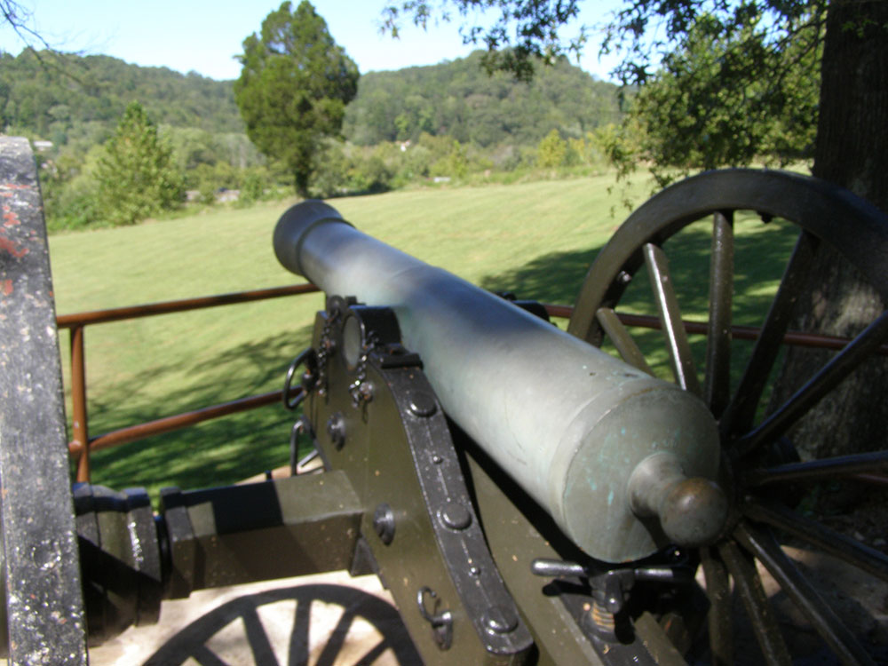
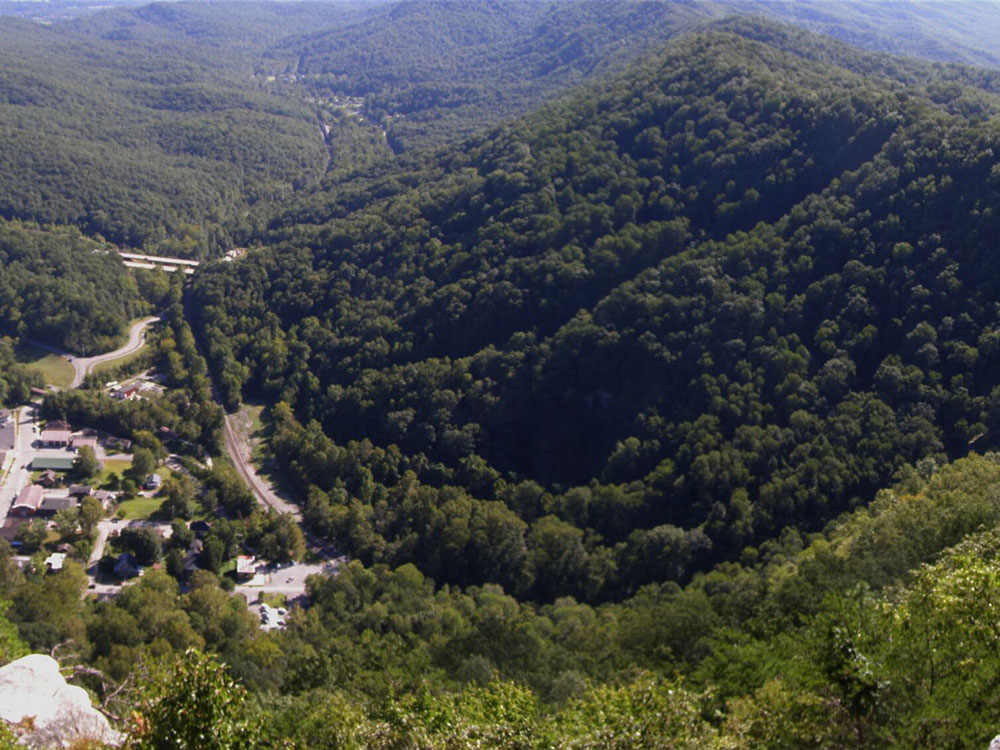
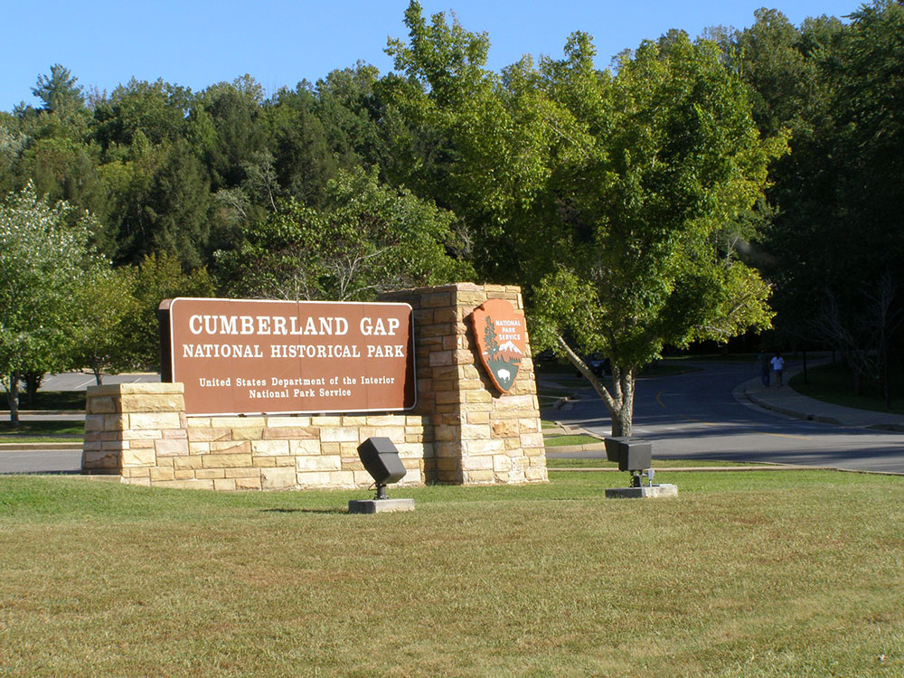
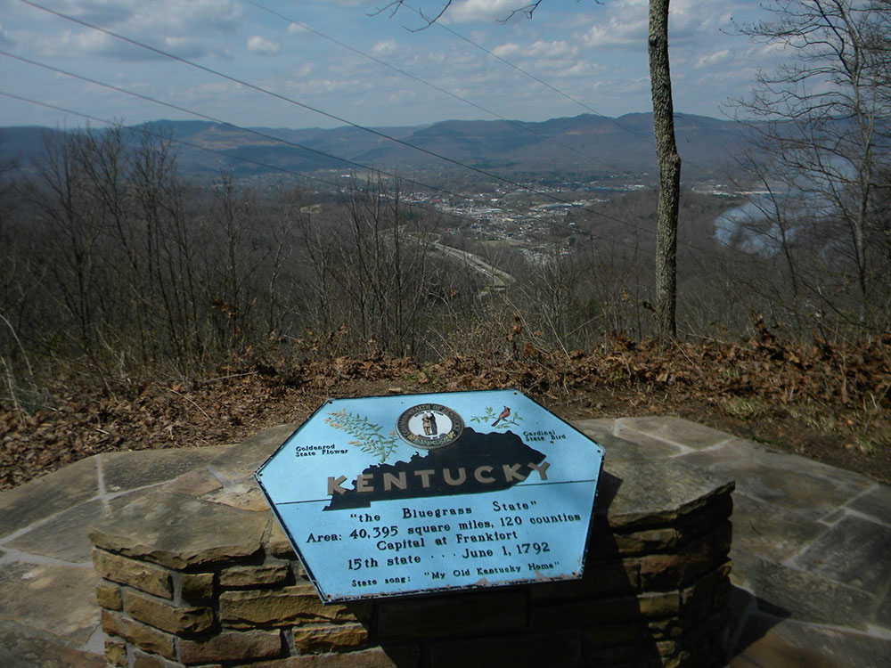
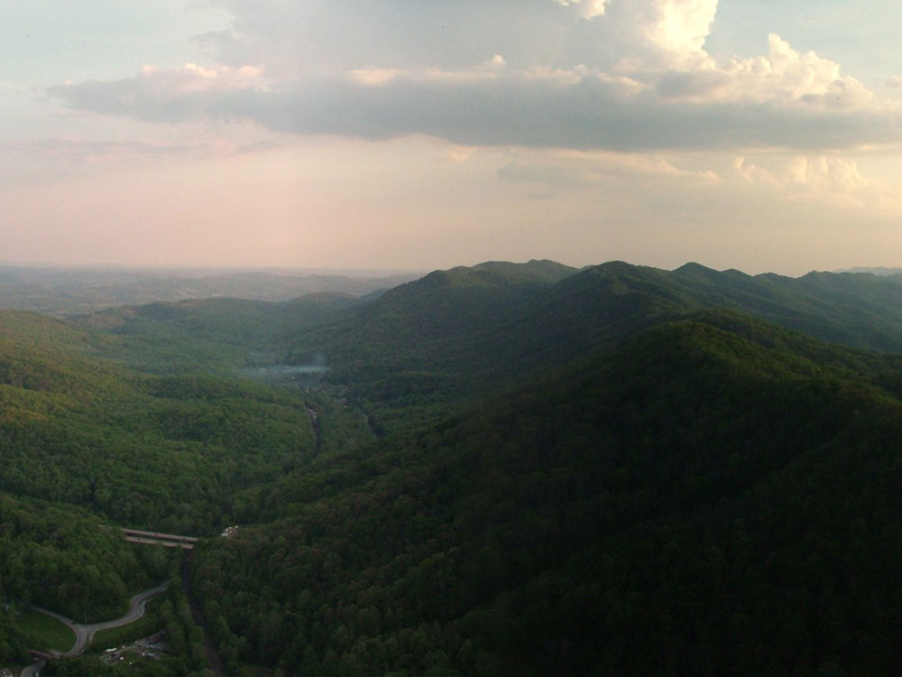
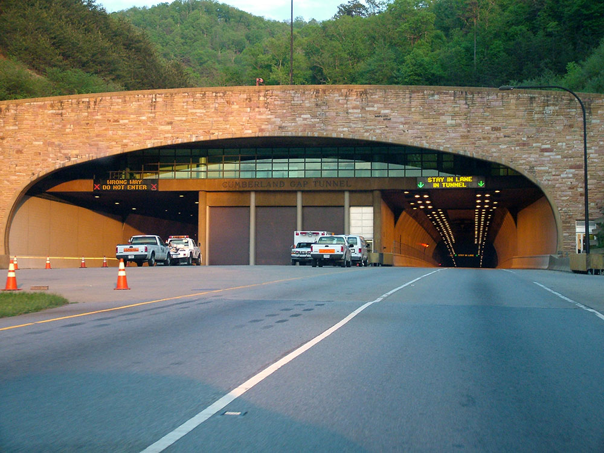
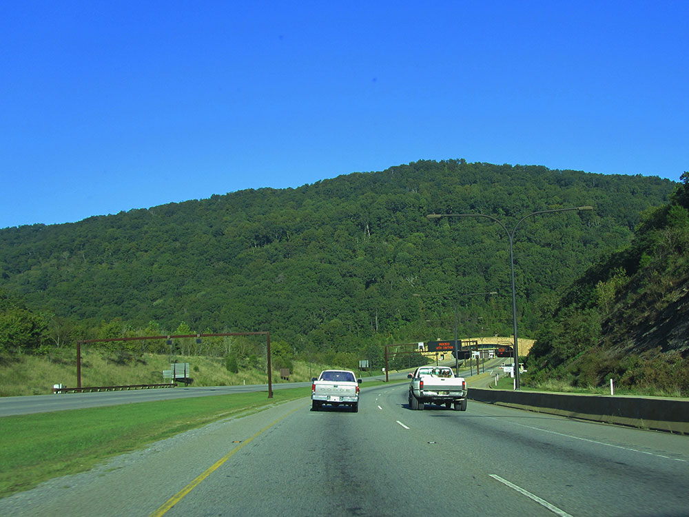

Pass through the long ridge of the Cumberland Mountains, within the Appalachian Mountains, famous in American colonial history for its role as a key passageway through the lower central Appalachians
General Information
Closed: Thanksgiving Day, Christmas Day, New Year's Day
Park grounds and picnic areas: Open daily
Pinnacle Overlook road may close during severe weather
Campground fees vary by site and season
Not permitted inside buildings
Open year-round
How to Get There
From Knoxville, TN (60 mi): Take US-25W N to I-75 N, then exit onto US-25E N toward Harrogate. Continue on US-25E N to Cumberland Gap National Historical Park in Middlesboro.
Overview
Cumberland Gap National Historical Park protects the Cumberland Gap, a natural pass through the Cumberland Mountains near the junction of Kentucky, Virginia and Tennessee. Long used by Native Americans and brought to the attention of settlers in 1750 by Thomas Walker, the gap became the main gateway for pioneers following Daniel Boone's Wilderness Road, and an estimated 200,000 settlers passed through it as they moved west. Congress authorized the park in 1940 to preserve this crossing and the surrounding mountain landscape, and it now covers roughly 24,000 acres along a 20-mile ridgeline. Visitors come for Pinnacle Overlook, which looks over three states, the Tri-State Peak, the Hensley Settlement, caves and the long network of trails.
Access
The park is on the Kentucky-Virginia-Tennessee border, with the main visitor center on US-25E just southeast of Middlesboro, Kentucky, and near the town of Cumberland Gap, Tennessee. It is roughly 60 miles north of Knoxville, and most visitors arrive by car; the Cumberland Gap Tunnel on US-25E carries traffic beneath the mountain, which allowed the historic gap to be restored. Skyland Road climbs from near the visitor center to Pinnacle Overlook, a drive of about four miles, and the road is narrow and may close in severe weather. The Middlesboro area and Harrogate, Tennessee, are the closest towns.
Seasons
Spring brings wildflowers and flowering trees to the ridges, and fall is the most popular season, when the mountains blaze with color and the views from Pinnacle Overlook are at their best. Summers are warm and humid, but higher elevations stay cooler than the valleys, and ranger programs and tours of the Hensley Settlement and Gap Cave are offered mainly in the warmer months. Winter can bring snow and ice that close Skyland Road to Pinnacle Overlook and make steep trails hazardous, although the bare trees allow long views. The park is open year-round, with the visitor center open daily except on a few holidays.
Things to Do
Explore Historic Cumberland Gap
Cumberland Gap National Historical Park preserves the famous mountain pass that served as a gateway to the American frontier. An estimated 200,000 settlers traveled through the gap during westward expansion, making it one of the most significant migration routes in United States history.
Visit the Pinnacle Overlook
Pinnacle Overlook is one of the park's most popular attractions, offering panoramic views of Kentucky, Virginia, and Tennessee from a single vantage point. The overlook provides spectacular scenery of the Appalachian Mountains and the historic Cumberland Gap region.
Discover Caves, Wildlife, and Mountain Landscapes
The park protects more than 20,000 acres of forests, ridges, streams, and caves. Visitors can enjoy wildlife viewing, photography, camping, and exploring diverse natural features while experiencing the beauty of the southern Appalachian Mountains.
Top Trails
Tri-State Peak Trail
Length: Approximately 1.6 miles round trip
Elevation Gain: Approximately 500 feet
Difficulty: Moderate
This popular trail climbs to Tri-State Peak, where Kentucky, Virginia, and Tennessee meet. Along the route, hikers enjoy scenic mountain views and the opportunity to stand in three states at once.
Pinnacle Overlook Trail
Length: Approximately 1.5 miles round trip
Elevation Gain: Approximately 300 feet
Difficulty: Moderate
This scenic trail leads to one of the park's premier overlooks, providing sweeping views of the Cumberland Gap region, forested mountain ridges, and the historic route traveled by generations of pioneers.
Sources: National Park Service official Cumberland Gap National Historical Park information, including frontier history, Pinnacle Overlook, hiking opportunities, cave resources, wildlife viewing, and visitor amenities. https://www.nps.gov/cuga/index.htm Additional trail, historical, and visitor information verified through National Park Service planning and hiking resources. https://www.nps.gov/cuga/planyourvisit/index.htm https://www.nps.gov/cuga/planyourvisit/hiking.htm
The Cumberland Gap is one of many passes in the Appalachian Mountains but the only one in the continuous Cumberland Mountain ridgeline. It lies within Cumberland Gap National Historical Park and is located on the border of present-day Kentucky and Virginia, approximately 0.25 miles (0.40 km) northeast of the tri-state marker with Tennessee.
The V-shaped gap serves as a gateway to the west. The base of the gap is about 300 feet (91 m) above the valley floor, even though the north side of the pass was lowered 20 feet (6.1 m) during the construction of Old U.S. Route 25E. To the south, the ridge rises 600 feet (180 m) above the pass, while to the north the Pinnacle Overlook towers 900 feet (270 m) above (elevation 2,505 feet (764 m)).
The nearest cities are Middlesboro, Kentucky, and Harrogate, Tennessee. The nearby town of Cumberland Gap, in Tennessee, is named after the gap.
The gap was formed by the development of three major structural features: the Pine Mountain Thrust Sheet, the Middlesboro Syncline, and the Rocky Face Fault. Lateral compressive forces of sedimentary rocks from deep layers of the Earth's crust pushing upward 320 to 200 million years ago created the thrust sheet. Resistance on the fault from the opposing Cumberland Mountain to Pine Mountain caused the U-shaped structure of the Middlesboro Syncline. The once flat-lying sedimentary rocks were deformed roughly 40 degrees northwest. Further constriction to the northwest of Cumberland Mountain developed into a fault trending north-to-south called the Rocky Face Fault, which eventually cut through Cumberland Mountain. This combination of natural geological processes created ideal conditions for weathering and erosion of the rocks.
The gap and associated historic resources were listed on the National Register of Historic Places as a historic district on May 28, 1980.
The Cumberland Gap National Historical Park is a National Historical Park located at the border between Kentucky, Tennessee, and Virginia, centered on the Cumberland Gap, a natural break in the Appalachian Mountains.
The park lies in parts of Bell and Harlan counties in Kentucky, Claiborne County in Tennessee, and Lee County in Virginia. The park contains the Kentucky-Virginia-Tennessee tripoint, accessible via trail.
The town of Cumberland Gap, Tennessee is located inside of the park's territory.
The Cumberland Gap Visitor Center is located on U.S. Highway 25E just southeast of the city of Middlesboro, Kentucky, and just northwest of the Cumberland Gap Tunnel and the town of Cumberland Gap, Tennessee. The visitor center features a museum with interactive exhibits about the Gap's role as a transportation corridor, an auditorium that shows films about the area's cultural and natural history, a book store and the Cumberland Crafts gift shop with crafts from Appalachia.
The park covers 24,000 acres (9,700 ha) and is among the largest national parks in the eastern United States.
The park runs along the Cumberland Mountains, stretching about 20 miles (32 km) with an average width of 1.6 miles (2.6 km). The park straddles a tri-state area encompassing land from Kentucky, Tennessee and Virginia. It includes the area of the Wilderness Road running through the passage across the Cumberland Plateau and through the Cumberland Gap, an important geological feature that facilitated travel for American settlers and Native Americans. It includes 24 known cave features ranging in size from around 20 feet (6.1 m) to more than 16 miles (26 km) in length.
There are a number of large cliff systems in the park, the most prominent of which is the 500 feet (150 m) cliffs of White Rocks, located in the eastern portion of the area. At the northeastern end, the park sits adjacent to the Sillalah Creek Wildlife Management Area and the Martin's Fork Wildlife Management Area and State Natural Area.
The park includes a visitor center, renovated in 2004, which features a museum and auditorium, providing exhibits on the areas cultural and natural history, as well as book and gift shops.
Guided tours of the Hensley Settlement and Gap Cave are provided from the tourist center. Around 3.5 miles (5.6 km) from the center, along the Skyland Road, lies the Pinnacle Overlook, which, at an elevation of 2,440 feet (740 m), overlooks the gap and the surrounding country.
There are 85 miles (137 km) of hiking trails, ranging from shorter routes such as the 2.6 miles (4.2 km) Sugar Run Trail, to the 21 miles (34 km) Ridge Trail, which spans the park and reaches an elevation of 3,513 feet (1,071 m). The nearby Wilderness Road Campground includes 160 campsites. No hunting is permitted within the park.
Tri-State Peak is located in the park, and is accessible by trail. A marker designating the tripoint of the states of Kentucky, Tennessee, and Virginia, is located at the peak of the mountain.
Visitor Centers
The Cumberland Gap Visitor Center, on US-25E just southeast of Middlesboro, has a museum with interactive exhibits on the gap's role as a transportation corridor, an auditorium showing films on the area's cultural and natural history, a bookstore and a crafts shop with Appalachian handcrafts. The center was renovated in 2004 and is open daily from 9am to 4pm, except on Thanksgiving, Christmas and New Year's Day. Park staff provide trail information and the starting point for guided tours of the Hensley Settlement and Gap Cave, when offered. Picnic areas and trailheads are nearby.
Camping and Lodging
The park's Wilderness Road Campground offers roughly 160 campsites, and backcountry camping is available along the trail system with a permit. Lodging, restaurants and services are in Middlesboro, about two miles away, and in Harrogate, Tennessee, about four miles away, as well as the small town of Cumberland Gap, Tennessee. Pine Mountain State Resort Park in Pineville, Kentucky, about 25 miles to the north, offers a lodge, cottages and a campground. Knoxville, about 60 miles south, has the widest range of hotels and other services.
This article uses material from the Wikipedia article "Cumberland Gap", "Cumberland Gap National Historical Park", which is released under the Creative Commons Attribution-Share-Alike License 3.0












